전시 보러 갈래? - 이하령, 재훈, 황아림과 함께 2
<4. 쟤네들은 2000년대 팝음악에 맞춰 폴댄스를 춰 (좀 멋진 걸?)
5. 별사탕이 피는 나무 아래서
6. 아트 선재 어선
4. 쟤네들은 2000년대 팝음악에 맞춰 폴댄스를 춰 (좀 멋진 걸?)
재훈: 혹시 문상훈 작가의 사진 작업 <손> 어떻게 보셨어요?
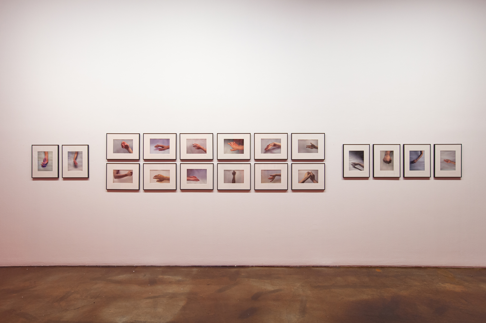
사진: 남서원. 제공: 아트선재센터. 2025
ⓒ Art Sonje Center
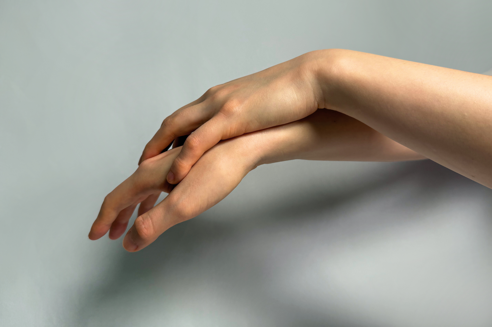
ⓒ 문상훈
황아림: 작업이 연작이라서 계속 다른 커플들이 추가되는 걸로 알고 있어요. 그 점이 되게 재밌었고, 보다 보니까 다들 손이 참 예쁘더라고요. 아마 대부분이 부치 손인 것 같은데, 정말 멋있다고 느꼈어요.
재훈: 저는 그 작업을 미술 아카이브에서 열린 전시 《우리는 끊임없이 다른 강에 스며든다》에서 처음 봤어요. 그 전시의 기획은 아카이브 기반의 미술이 공공 기록의 사각지대에 있는 역사를 어떻게 기록해왔는지 살펴보는 것이었고, <손>은 성 소수자 인권 운동 섹션에 배치되어 있었는데요. 작품을 처음 봤을 때 되게 미미하다고 생각했어요. 어느 쪽으로나 정보량이 많은 작업은 아니라 조금 아쉽기도 했고요.
근데 같은 작업이 이 전시에 걸리니까 사뭇 다른 맥락으로 읽히더라고요. 액자 안에 사진이 있고 그 손의 주인인 레즈비언 연인의 이름이 적혀 있잖아요. 그게 앞서 말했던 <다크 인덱스>의 제목에 나온 사람들 이름처럼, 전시의 일부 참여자들로 위시되는 여성퀴어 커뮤니티의 존재를 다시 떠올리게 했어요. 아림님께서 이야기해주신 것처럼 퀴어 친구들 사이 놀이의 연장으로서 느껴지기도 하고요.
황아림: 저는 그 점에서 장영해 작가의 영상 작업 <I want to die because I want to touch aono / I want to hold aono so badly I could die>(이하 <aono>)가 생각났어요.
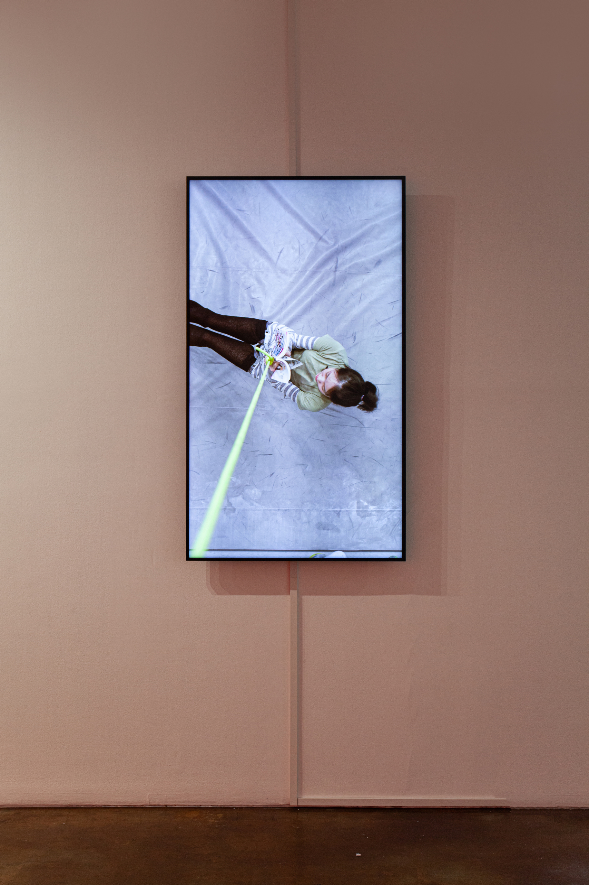
사진: 남서원. 제공: 아트선재센터. 2025
ⓒ Art Sonje Center
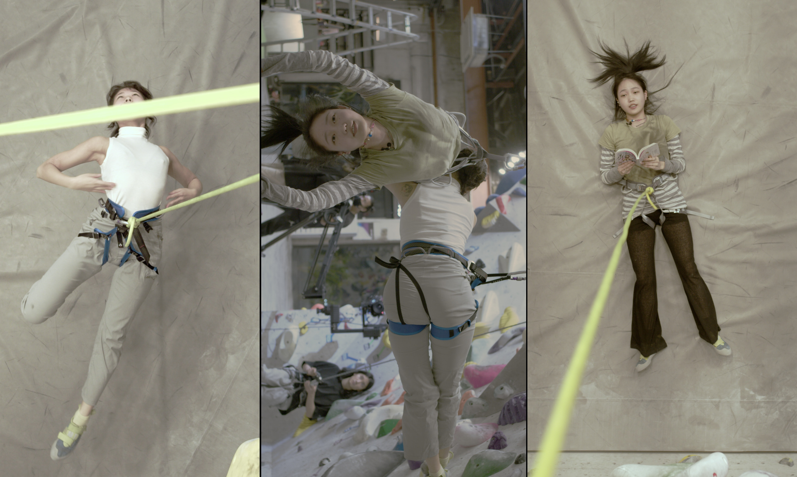
ⓒ 장영해
재훈: 아오노군.
황아림: 네, 작업에 만화 『아오노 군에게 닿고 싶으니까 죽고 싶어』(이하 『아오노군』)가 나오더라고요. 제 친구들이 『아오노군』 진짜 좋아하거든요. 영상에서 퍼포머가 클라이밍 기구에 매달려 『아오노군』을 낭독하는데 거기서 “내 손이 네 손이 될게” 이런 뉘앙스의 대사가 있었던 걸로 기억하거든요? 그 대사를 들은 후에 문상훈의 <손>을 보니 다르게 다가오더라고요.
재훈: 그걸 그렇게 연결해서 보셨구나, 이거 의도한 거면 엄청난 기획인데요? (웃음)
황아림: 그렇게도 보이더라고요. 그냥 우연이겠지만.
재훈: 제가 아는 여자 퀴어들도 다 『아오노군』 알던데, 왜 다들 그렇게 좋아하는 거죠?
황아림: 다들 귀신이랑 *멘헤라 **BPD 좋아해서
(출처: 페미위키)
**BPD: 경계선 성격 장애
재훈: 영상 작업 <aono>는 ‘페어링 안무에서 성별에 따라 달라지는 몸의 움직임을 탐구하는 작업’이라고 소개되는데, 사실 영상을 보며 그 감각을 도드라지게 느끼지는 못했어요. 근데 퍼포먼스 <𝄆 climb, fronthook, angel, invert, daphne, figure head, scorpion, fall, gemini, princess, chopstick>(이하 <𝄆 climb>)에서는 조금 느껴지는 바가 있었거든요.
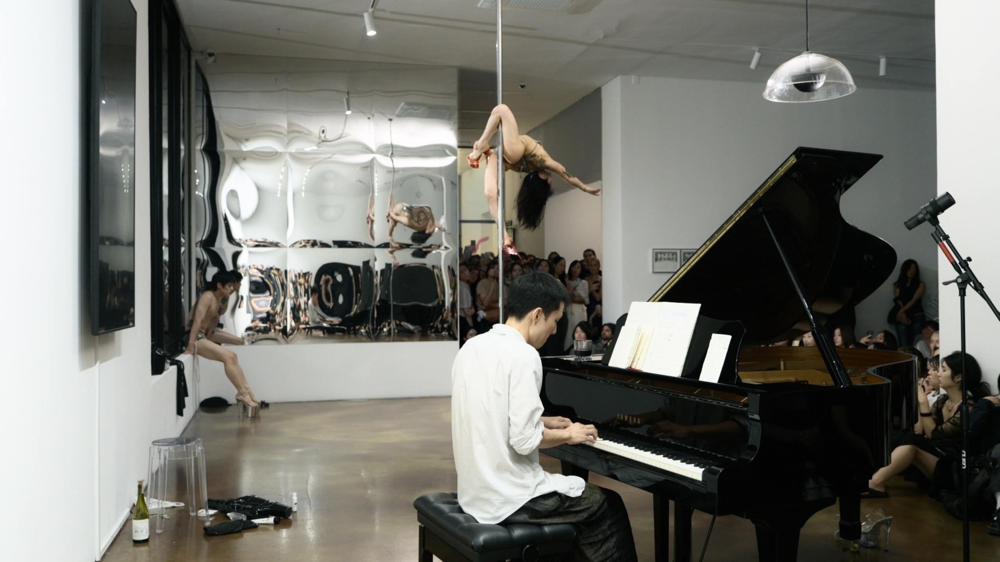
사진 제공: 장영해
ⓒ 장영해
재훈: 남자 댄서 한 명과 여자 댄서 한 명이 피아노 반주에 맞춰서 피아노 반주에 맞춰 탈진할 때까지 교대로 폴댄서를 추는 퍼포먼스였는데요. 처음 봤을 때는 그 낯선 화려함에 이게 뭐지 싶었는데, 두 배우가 연기를 정말 잘하는 거예요. 저는 남자 댄서의 연기가 특히 좋았어요. 남자 댄서가 여자 댄서처럼 하이힐을 신는데, 그 덕분에 감정 이입이 되기도 했고요. 근데 이것 외에 퍼포먼스 작품에서도 성별에 따른 차이는 크게 못 느꼈어요.
퍼포머가 탈진할 때까지 즉흥 안무를 하는 게 조건이라서 중간에 나간 관객들이 많았는데요. 하령님은 혹시 끝까지 계셨나요?
이하령: 저는 1시간 중에 40분 정도를 봤어요. 저도 눈에 가장 먼저 보이는 신체적인 특징 말고 태도적인 면에서의 성별에 따른 차이는 잘 못 느꼈어요. 작가가 그 점에 관심이 있는지는 나중에 전시를 제대로 보러 갔을 때 리플렛을 읽고 나서 알게 됐어요.
재훈: 이 퍼포먼스에도 사람이 정말 많았는데, 어디 자리에 계셨나요?
이하령: 저는 계속 옮겨다니면서 봤어요. 염치 없게 “죄송합니다. 죄송합니다.” 이러면서요. 왜냐하면 어느 자리에서는 피아니스트가 아예 안 보였고 어느 자리에서는 댄서가 대기하는 모습이 안 보였거든요. 여러 각도에서 보고 싶어서 한 두세 번 옮겨다녔어요.
재훈: 저도 비슷하게 봤어요. 관객들이 퍼포먼스의 사면을 둘러싸고 있어서 퍼포머가 봉 위로 많이 올라가야 볼 수 있더라고요. 그렇게 보다가 사람들이 하나둘씩 빠져서 조금씩 앞으로 가서 보고. 근데 퍼포먼스의 러닝타임이 퍼포머의 탈진 시기라는 정보를 보고서는, 그냥 계속 보는 게 의미가 없다는 생각이 들었네요. 안무가 짜여져 있었다면 모르겠는데 즉흥 안무였다 하니, 관객들이 퍼포먼스를 어떻게 보는지나 관객 수가 줄어들고 늘어나는 풍경으로 눈을 돌렸었어요.
황아림: 공연에서 피아니스트가 연주하는 곡이 되게 특이했다는 생각이 드는데요. 팝송 아니었나요?
이하령: 맞아요. 이정현 노래도 있었고, 2000년대 팝음악과 케이팝을 섞어서 연주했던 걸로 기억해요.
황아림: 긍정적인 의미에서 부조화스럽다고 느꼈는데 현장에서도 그랬나요?
이하령: 전 그 부조화가 좋은 점이었어요.
재훈: 저는 원래 폴댄스에서 배경 음악으로 어떤 곡들이 선정되는지 몰라서 그냥 리듬 타면서 봤던 것 같아요. 부조화스러웠나요?
이하령: 네, 저는 그 부조화가 좋았어요. 그리고, 그 피아니스트 분이 전문 피아니스트가 아니라서 더 좋았어요. 고약한 생각이지만… 오히려 더 못 쳐도 좋았을 것 같다는 생각마저 들 정도로요. 많이 연습하신 것이 현장에서 고스란히 느껴졌어요.
그리고 저는 이 공연의 흐름이나 형식이 디제잉과도 비슷하다고 생각했어요. 그래서 ‘반드시 끝까지 봐야만 내가 이 작업을 리스펙 하는 거다.’라는 암묵적인 규칙에서 비교적 자유롭다고 느꼈어요. ‘쇼’를 한창 보던 중 내 뒤를 돌아봤는데, 다들 넋놓은 표정을 지은 군상의 모습이, 우스운 우리의 모습이 무대보다도 더 시각적 충격으로 다가오는 순간도 있었습니다.
재훈: 디제잉 같다고 하니까 딱 이해가 되네요. 되돌아 보니 꽤 이상한 풍경이었네.
5. 별사탕이 피는 나무 아래서
재훈: 아까 아림님이 말씀하셨던, 더 많은 퍼블릭을 만난다고 해서 작가의 태도가 바뀌는 게 아니라는 이야기를 들으면서 한솔 작가의 영상 작업이 떠올랐어요. 그의 출품작들이 다 구작이고 학부 시절에 찍은 것 같던데, 정말 훌륭한 풍자극이라고 생각했어요.
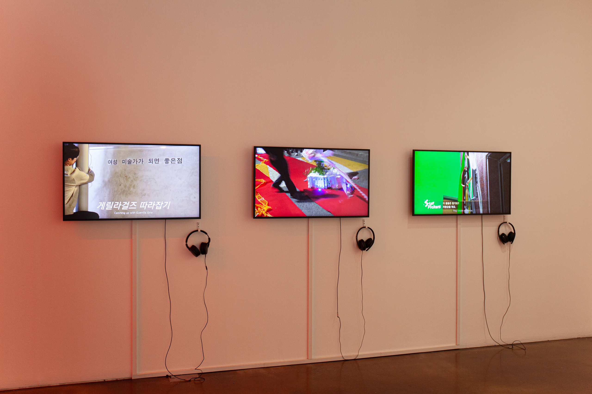
사진: 남서원. 제공: 아트선재센터. 2025
ⓒ Art Sonje Center
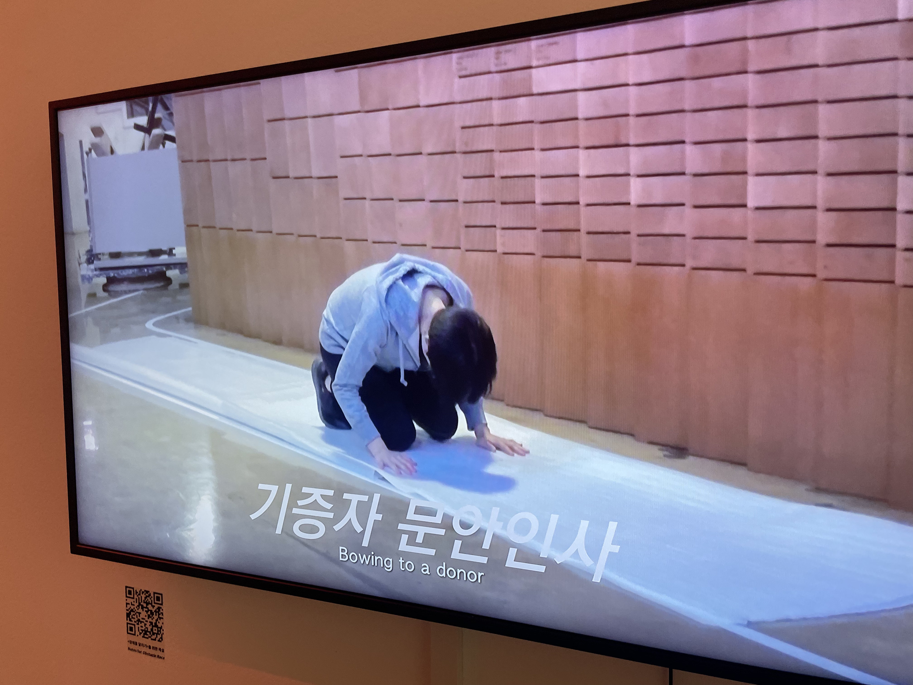
ⓒ 한솔
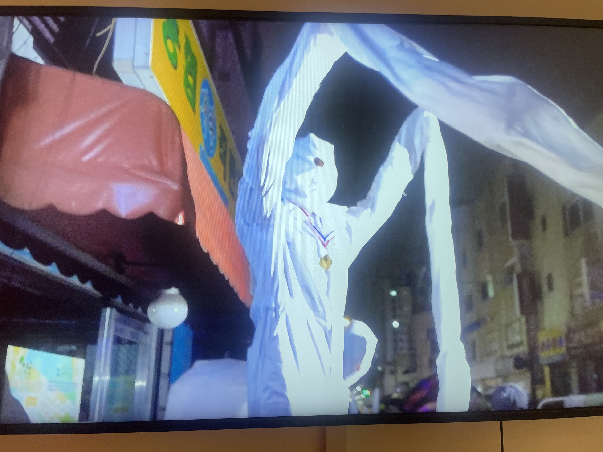
ⓒ 한솔
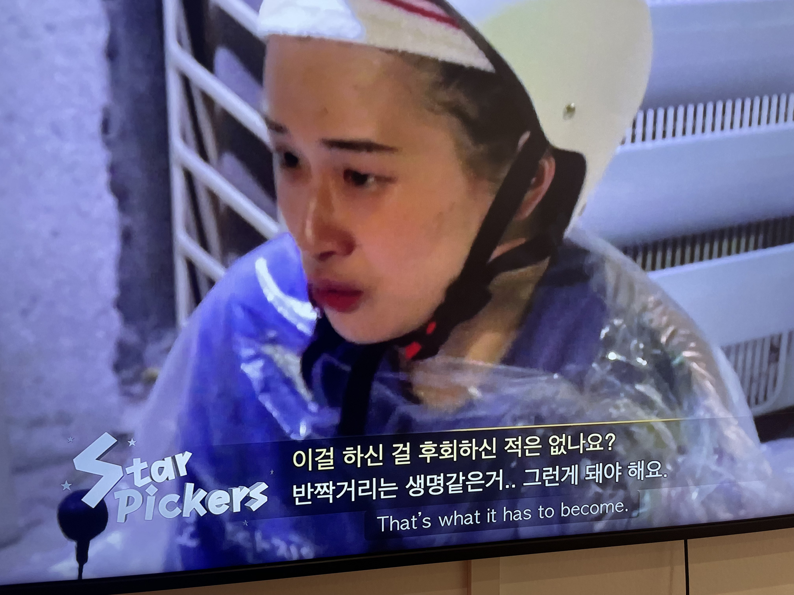
ⓒ 한솔
재훈: <장애물 달리기>는 프리케리아트 미술 학부생 버전의 출발 드림팀을 보는 듯했어요. 작가가 스스로를 퍼포머로 삼아 ‘기증자에게 문안 인사드리기’와 같은 우스꽝스러운 미션을 수행하며 학교 건물을 누비는 모습이 미술가의 모습과 비슷해서 정말 웃기더라고요.
<스파르타식 달리기>는 그 뒤 2019년에 열린 개인전 《언제나 내일》과 연계한 퍼포먼스를 기록한 영상으로 보였는데, <장애물 달리기>와는 다르게 관객들이 있잖아요. ‘가시복숭이, 긴팔이, 짐진자’와 같이 어이 없는 이름을 가진 캐릭터들이 정해진 코스에서 이루어지는 레이스였는데요. (개인적으로는 ‘짐진자’라는 이름은 무당에게 작명을 의뢰했나 싶을 정도로 기막혔어요.)
백화점에서 들릴 법한 BGM 속에서 조잡한 퍼포먼스를 보다 보니, 세련된 BGM이 흘러나오는 멋있는 카페에서 손이 부서져라 설거지하는 알바의 심정 같은 게 느껴지더라고요. 런던베이글뮤지엄처럼요. 관객들의 모습도 많이 나왔는데 그들 모두가 즐거워하는 분위기가 전달되어 신났어요. 첫 개인전 때 만든 작업인데도 불구하고 너무 훌륭해서 깜짝 놀랐네요.
이 전시에 참여한 작가들의 환경은 각자 다르겠지만, 저에게는 한솔 작가의 세 편의 영상이 참여 작가들이 미술을 하는 모습이나 계급성을 포트레이트로 담아낸 것처럼도 보이더라고요. 야광의 <침입자>에서도 부동산 이야기가 들어있잖아요. 두 작가가 서로 같은 조건 하에서 삶을 살고 있는데 그 문제를 각기 다른 장르와 형식으로 풀어낸 것처럼도 느껴졌고요.
황아림: 야광도 비슷한 이야기를 하긴 하는데, 그걸 한솔 작가와는 다른 시각 언어와 미감으로 보여주잖아요. 작업을 보면서 이미지나 형식이 되게 잘 정리되어 있다는 느낌이 들었어요.
재훈: 완성형이죠. 프로덕션 많이 투입되고.
황아림: 반면 한솔 작가는 일부러 거친 미감과 아마추어적인 표현 방식을 계속해서 선택하고 있는 것 같다는 생각도 들었어요. 혹시 뮤지엄헤드에서 열렸던 전시 《말괄량의 길들이기》에 한솔이 출품했던 영상 <Madele2n Love>를 보셨나요?
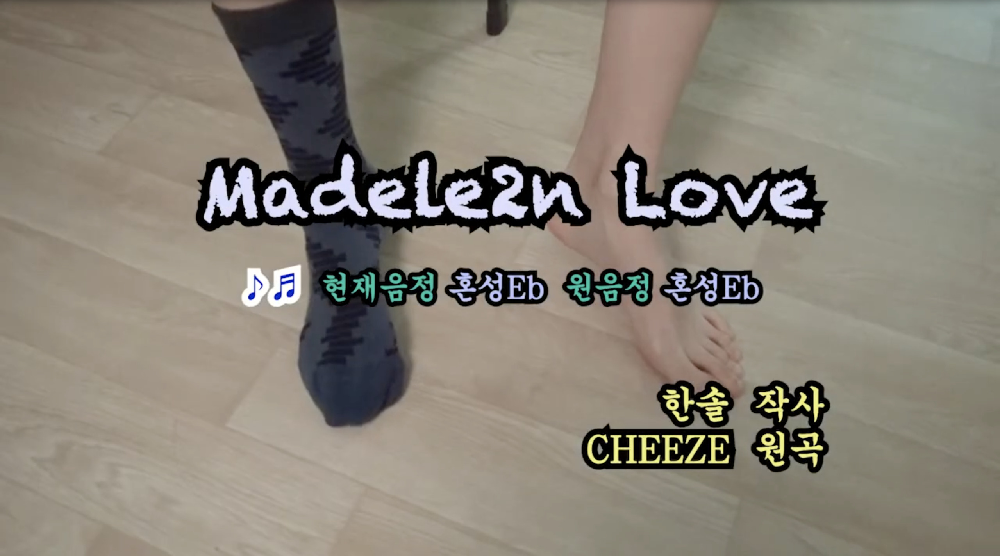 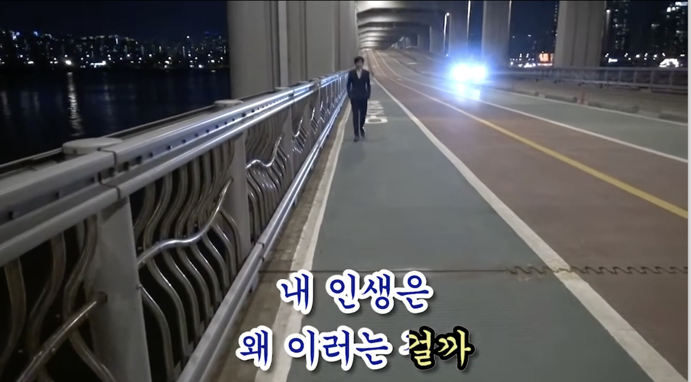 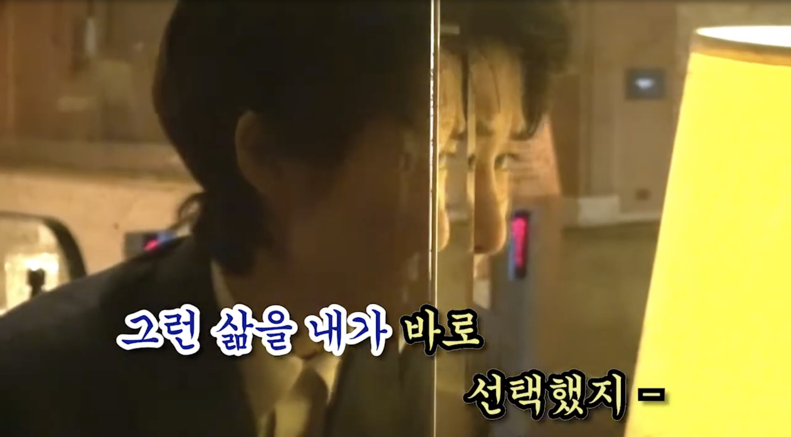
원곡: Cheeze, 출연: 아장맨(김다원), 금개(금혜지), 훈님(문상훈). 촬영: 김해영, 제공: 한솔
ⓒ 한솔
재훈: 네, 봤어요.
황아림: 그거랑 비교했을 때 이번 작업들이 어떻게 느껴지세요?
재훈: 미감상으로 이번 출품작들과 크게 달라졌다고 느끼진 않았어요. 근데 한솔 작가가 갖고 있는 강한 계급의식과 미술계에 대한 통찰을 떠올려본다면, 지금의 UCC 미감은 작가 본인이 고수하고 있는 것이라 생각돼요. 마테리알이 한솔과 함께한 인터뷰인 「[서신교환] 한솔 × 비카 키르헨바우어 × ma-te-ri-al: 계급 말하기」를 보면 신진 작가로서 매년 기금을 받아 단계적으로 성장해 ‘성공’에 이르는 미술가의 커리어 기획이 생활이나 작업에 필요한 기본 자금이 있어야만 가능하단 사실이 은폐되어 있다는 내용이 나오는데요.
작가가 (본인에게 주어진) 한국 사회에서 작가로서나 생활인으로서의 존재 방식을 떠올려 봤을 때 자신의 조건에서 할 수 있고, 계속 해야 할 예술의 미감은 이것이라는 판단 하에 그 계급적 자의식을 반영한 결과물이 아닌가 싶어요. 이건 뭐 한솔, 성재윤, 문상훈 작가가 참여하는 이무기 프로젝트의 결과물은 또 어떤 미감을 취하는지 더불어 이야기한다면 좋겠지만, 개인 작업에 있어 한솔의 미감은 아까 말씀하신 것처럼 일관되게 아마추어틱 하게 보였어요. 근데 그럼에도 불구하고 엄청 좋았다.
이하령: 근데 ‘그럼에도 불구하고’인 이유가 있어요?
재훈: 그게 통상 안 좋은 작품의 이유로 여겨지니꺼요.
이하령: 시장에서 안 팔리는 작품에 대해 자문하게 되네요.
재훈: 다른 생각을 가지고 계신가요?
이하령: 잘 모르는 영역이라 말하기 조심스러운데요. 몇 년 전까지 아마추어리즘을 실천하는 일이 미술 하는 많은 사람에게 커다란 소구점이었던 걸로 기억해요. 그런데, 아직까지 아마추어적 미감이 시장에서 이해받고 팔리기 어려운 이유가 되는 것인가? 과연 아마추어적이라는 점이 진짜 문제인가라는 생각을 스스로 하고 있어요.
재훈: 차연서 개인전 《거상거상 거상거》 어떻게 보셨어요?
이하령: 재밌게 봤어요. 저는… 딴 생각을 하는 이들에게 눈길이 가요.
재훈: 네, 근데 일단 그 이야기는 킵해놓죠. 아림님 하실 말씀 있나요?
황아림: 그 전시도 저는 굉장히 재미있게 봤어요. 다만 제가 알고 있는 차연서 작가의 작업에 비해 이번에는 표현이 조금 더 절제되어 있다는 인상을 받았고, 연서도 스스로 그렇게 이야기하더라고요. N/A 측에서 제안한 방향성도 어느 정도 있었다고 해서, 아 이 작업이 놓인 조건과 맥락 안에서 그렇게 선택한 거구나 하고 이해하게 됐어요
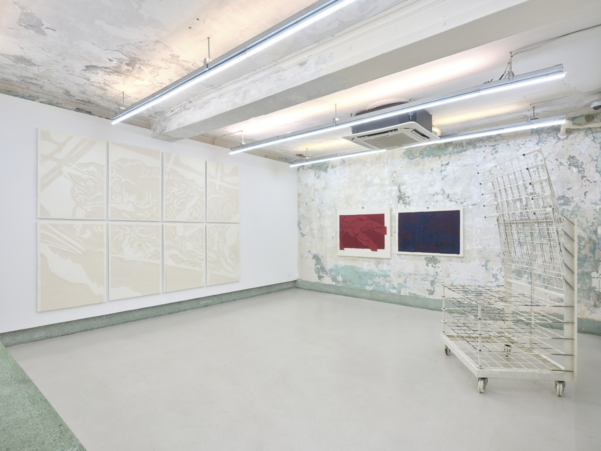

 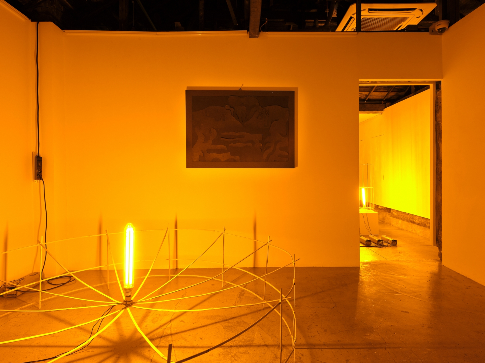
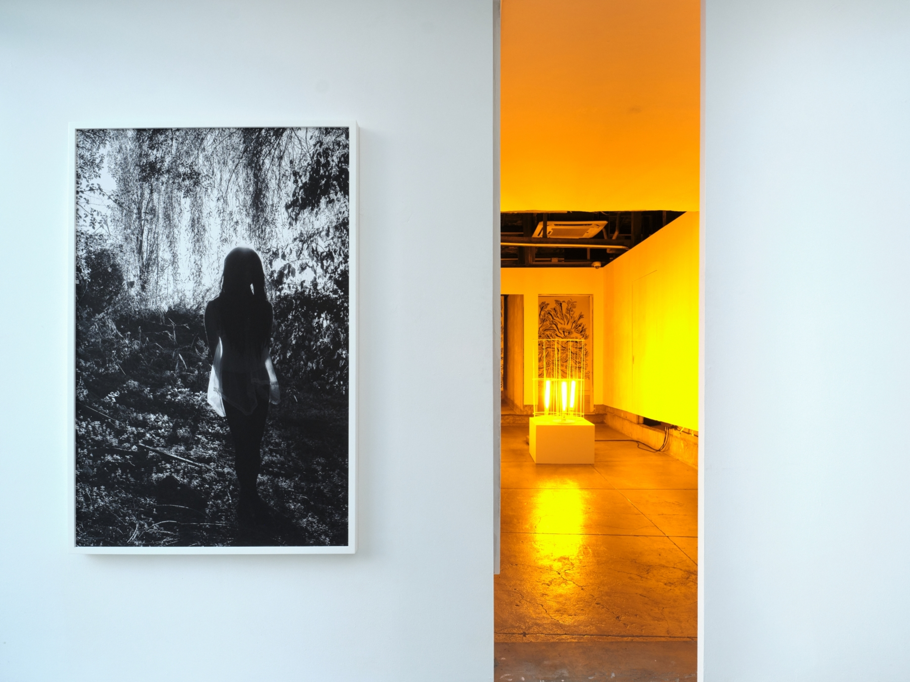
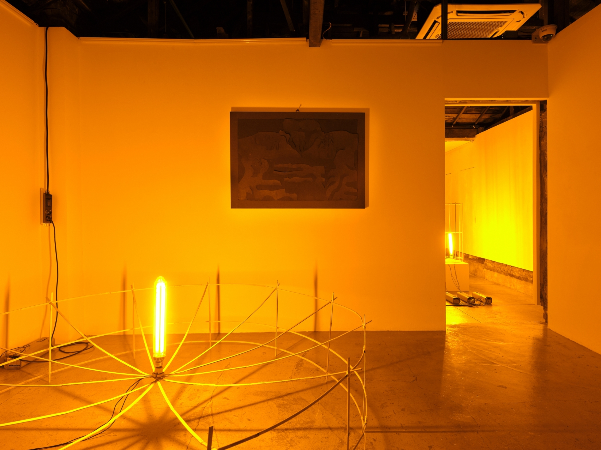
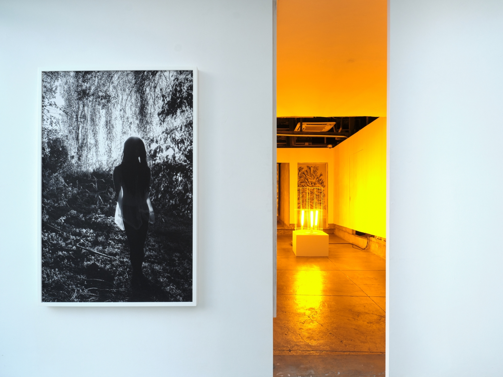
제공 N/A
ⓒ N/A
황아림: 저는 차연서 작가의 작업이 한 번 크게 전환된 순간이 있었다고 느꼈어요. 정확한 연도는 잘 기억이 안 나는데, TINC에서의 전시나 LES601 선유에서의 <Mosquitolarvajuice 모스키토라바쥬스>가 생각나요. 그때와 비교했을 때, 《모텔전》을 기점으로 작업의 방향이 조금 달라졌다는 인상을 받았어요. 이번 전시를 보면서도 차연서 작가가 굉장히 힘든 시간을 지나고 있다는 게 느껴지면서 동시에, 자기 작업의 방향을 스스로 찾아가고 있다는 느낌을 받았고요. 작업을 대하는 태도나 선택이 점점 더 또렷해지고 있다는 생각도 들었어요.
재훈: 이번 전시 보면서요.
황아림: 네, 그리고 전시를 보고 나서 차연서 작가와 나눴던 대화도 되게 좋았어요. 제 고향 동네가 재개발되면서, 집 터에 남아 있던 향나무가 결국 잘리게 됐거든요. 그 장면을 담은 영상을 지난 6월에 열었던 제 개인전 《종이와 껍질》에서 보여줬고, 연서에게도 그 향나무랑 집 터에 대한 이야기를 해줬어요. 그랬더니 차연서 작가가 예전에 자기 아버지가 쓰시던 남양주 작업실에 있던 소나무 이야기를 해주더라고요. 하여튼 재훈님이나 연서나 저나, 이렇게 나무로 연결되는 지점이 있나 하는 생각이 들었어요. 그래서 궁금해졌는데, 재훈님은 이번에 왜 차연서 작가 작업에 참여하시게 된 거예요?
재훈: 《거상거상 거상거》에 참여하게 된 건 서문을 의뢰 받으면서부터에요. 글을 쓰려 작가에 관해 공부하고 서로 이야기와 자료를 주고받는 과정 중 작가가 사용하는 남양주 작업실에 다녀온 적이 있는데요. 그 전후로 많은 이야기를 나누다 제 개인 작업에 관한 이야기가 나왔어요. 남양주에서 사진을 찍는 제 모습을 차연서 작가가 영상으로 촬영한 <daddy>나 제 사진 작업 <오래된 미인의 얼굴>을 《거상거상 거상거》에 포함하는 일 모두 그때 이후로 자연스럽게 이뤄졌어요.
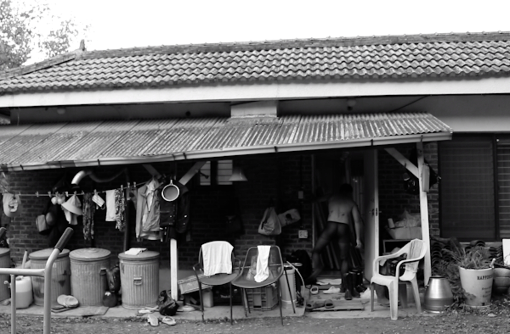
촬영 및 편집: 차연서 출연: 재훈 장소: 남양주 작업실, 정원, 그리고 뒷산
ⓒ 차연서
황아림: 영상 좋던데요?
재훈: 다들 그렇게 말씀하시더라고요.
황아림: 근데 재훈님은 왜 그 사진을 찍을 때 자연을 배경으로 찍으셨어요?
재훈: 제가 입고 싶은 옷, 입어야 하는 옷을 입어도 자연은 아무 말 없이 있어주잖아요.
이하령: 제가 차연서 님의 작업을 잘 모르지만, 작품을 봤을 때 처음부터 그것만 해온 사람이 아닌 사람의 작업이라는 게 단숨에 느껴져요.
재훈: ... 그게 무슨 말이죠?
이하령: 물론 그 뒤에 여러 가지 이야기가 있겠지만, 이 작품들은 차연서 작가의 선택이었던 거잖아요.
재훈: 이번 전시에 먹으로 그려진 동양화 풍의 작품이 꽤 있었잖아요. 저도 그랬는데, 이번 전시를 본 관객들이 그 그림을 보고 꼭 늙은 사람의 작품 같다는 말을 많이 하더라고요. 방금 하령님의 말씀도 이 작가가 처음부터 동양화만 그려온 사람이 아니라는 점이 느껴졌다는 뜻으로 받아들였는데, 맞나요?
이하령: 네, 그 얘기였어요. 저는 다양하고 혼란스러운 선택지 속에서 자기 양식을 찾아가는 사람들한테 관심이 있어요. 닥종이를 오리고 붙여서 만든 여러 점의 <축제> 연작이, 작가가 할 수 있는 여러 가지 선택 중 한 가지 풀이로 제게 다가왔어요.
6. 아트 선재 어선
재훈: 하지민 작가 영상 작업은 어떻게 보셨어요? 퍼포먼스도 보셨나요?
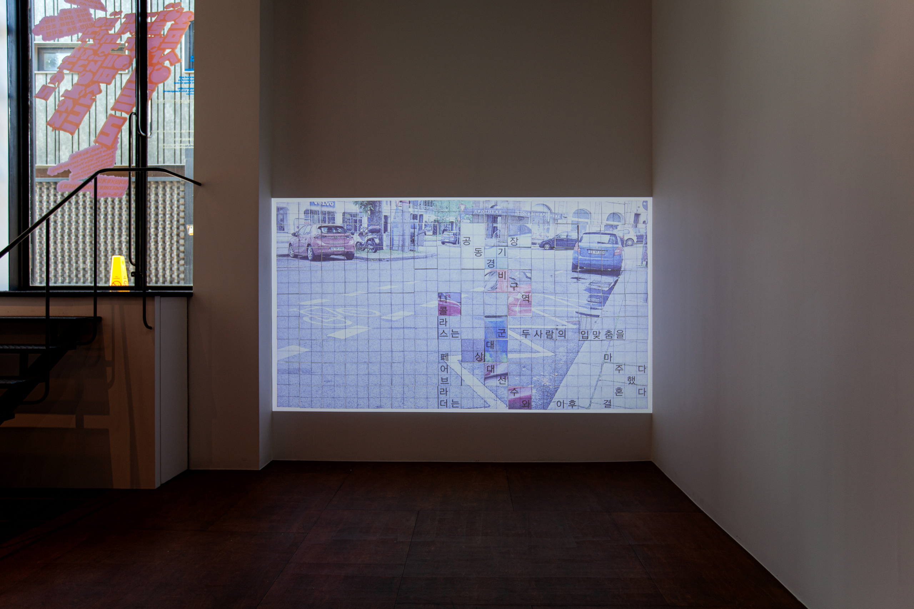
사진: 남서원. 제공: 아트선재센터. 2025
ⓒ Art Sonje Center
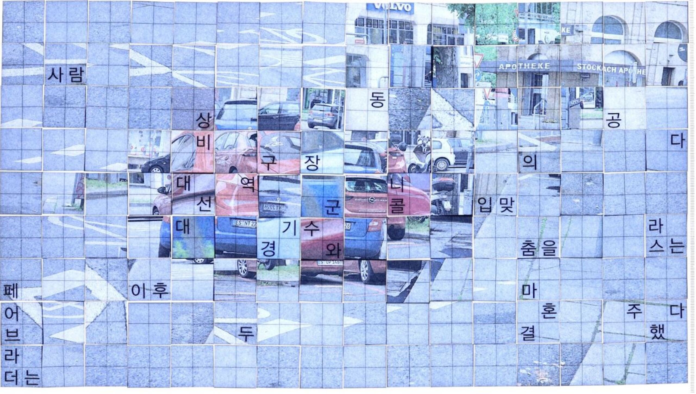
ⓒ 하지민

사진: 남서원. 제공: 아트선재센터
ⓒ Art Sonje Center
이하령: 오랜 시간 알고 지낸 사람이 자주 하는 생각의 한 부분이 매듭 지어지는 모습을 목격하면서 몸과 마음이 보글보글해지는 기분이었습니다. 제 친구의 취향은 어떻고 관심사는 무엇이다라는 점은 대략 알고 있잖아요. 그 파편들로부터 출발해 저도 함께 어딘가로 끌려가다가, 멈춰서 잠시 같은 풍경을 봤습니다.
재훈: ‘니콜라스’라는 키워드나 격자무늬를 뒤집는 방식에 꾸준한 관심을 보였던 지인이 이번에 그것만으로 작업을 발전시켰다는 느낌인가요?
이하령: 음… 작업에서 ‘반드시 기존의 요소들이 심화와 발전을 거쳐야 한다’는 발언을 하고 싶지는 않네요. 어떻게 표현해야 좋을지 모르겠네요. 근데 그냥, 주어진 시간과 조건 속에서 어딘가에 도착한 모습이 보였어요. 영상이랑 퍼포먼스 둘 다.
재훈: 조현진 작가와 하지민 작가가 첫 발표를 퍼포먼스 <밤짐승 놀이패> 공동 연출로 했잖아요. 저는 그 작업이 두 사람이 그때까지 만들어온 조형 언어 및 네트워크를 사방지라는 인물의 이야기를 뼈대 삼아 구체화한 결과물로서 이해하는데요. 이번 전시에서는 그 당시 공동의 것으로 엮어냈던 방법론을 잠시 놓아두고, 각자의 작업에 더 집중해서 보여줬다고 생각했어요.
하지민 작가는 여러 장의 이미지를 격자 형태로 나눈 뒤 그 조각들을 뒤집으며 이미지를 만들어나가는 방법론을 ‘니콜라스’라는 이름을 사용하는 (혹은 사용한다고 여긴) 세 사람의 이야기를 매개 삼아 집중적으로 다뤄본 듯해요. 제가 봐왔던 작가의 전작들에서도 그 방법론이 등장하긴 했지만 중심축을 맡진 않았거든요.
황아림: 하지민 작가는 이전부터 카드 놀이나 게임 형식에 관심을 가져왔던 건가요?
이하령: 일하는 사람들의 신체와 운동성에 대한 하지민 작가의 관심은 꾸준히 이어져왔던 듯해요. 저는 <밤짐승 놀이패>에 음악 제작으로 참여했어요. 처음 제안을 받았을 때 하지민, 조현진 작가 두 분이 제게 북한의 카드 섹션 영상을 보여줬어요.
황아림: 작가의 전작인 <두꺼비 근로>에도 길거리에서 무언가를 운반하는 사람들이 나왔던 걸로 기억하는데, 야광의 작업이랑도 연결되는 부분이 있네요. 야광도 노동하는 신체를 작업 안에 들여오고 있잖아요.
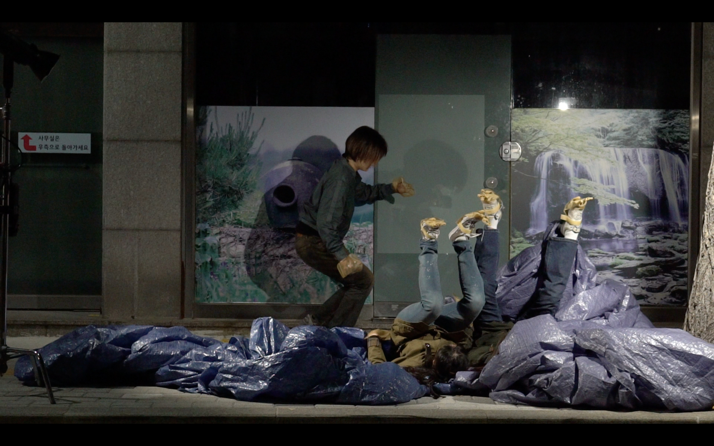 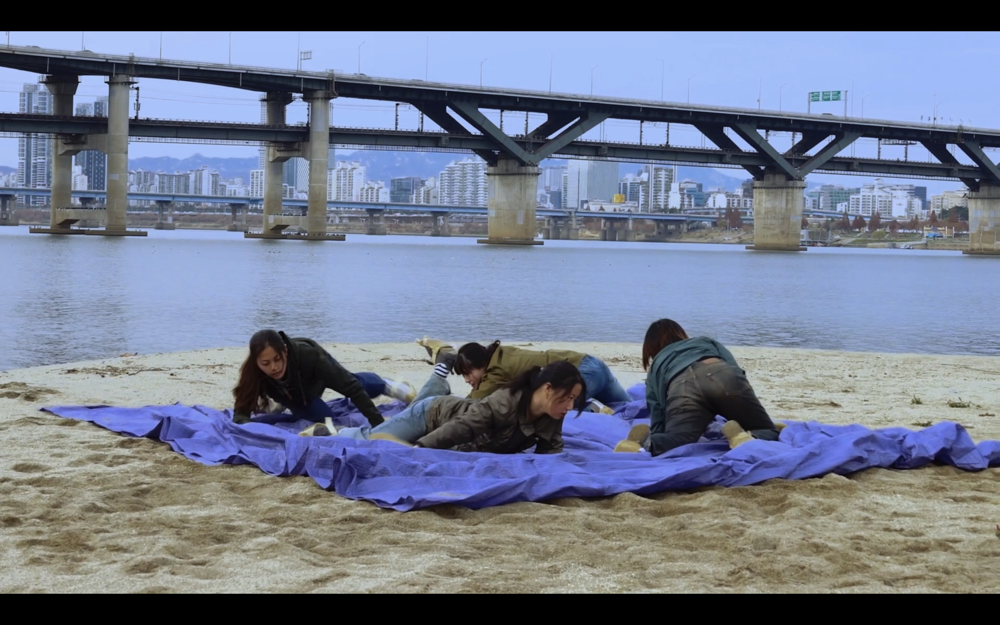
ⓒ 하지민
재훈: 와, 그렇게도 연결될 수 있구나. 노동하는 신체에 대한 하지민의 관심사가 <두꺼비 근로>에서는 영상의 주제나 퍼포머들의 움직임을 결정지었을 만큼 두드러졌다는 점은 동의해요. 다만 이번 <니콜라스의 십자말>를 읽는 데 노동이란 키워드보단 ‘유희’나 ‘놀이’라는 단어가 더 도움되지 않을까 싶어요. 어쨌거나 십자말풀이는 사람들이 시간 죽일 때 집어드는 게임이니까요. 근데 작가의 모든 작업을 연속체로 본다면 다른 이야기를 할 수 있겠다는 생각은 드네요.
전시 《오프사이트》가 시리즈 물이잖아요? 2년 전에 선재의 내외부 공간에서 첫 번째 《오프사이트》가 열렸고, 선재 측에서는 그 전신이 되는 전시가 아트선재센터의 개관전인 《싹》이라고 하더라고요. 아트선재센터의 건물을 짓기 전 원래 자리에 있던 개인 주택에 그 당시 신진 작가들을 모아서 열었던 전시였는데요. 《싹》이나 선재의 유휴 및 비개방 공간을 다룬 《오프사이트》는 장소성에 관한 고민이 녹아있는 결과물이라고 생각했는데, 《오프사이트 2》는 상대적으로 전시 기획이 헐겁게 느껴져서 아쉬웠어요.
‘이번 전시에서 ‘장소성’은 단순한 물리적 공간을 넘어, 사회적 맥락이 투영되고 각인되는 몸으로 확장되어 이해됩니다.’라는 소갯말이나 국제갤러리 K2와 (투게더)(투게더)를 선정한 이유가 잘 납득이 안 됐습니다. 공간 선정은 그저 지금 시기에 전시할 수 있는 공간을 기준으로 이루어진 듯보였거든요. 신체에 관한 이야기도 참여자들 작업에 당연히 내재되어 있는 것으로 여겨 생각하고 있지 않았는데 방금 야광과 하지민에 대한 아림님의 말씀을 들어보니까 갑자기 설득이 되네요.
황아림: 근데 사실 이 지점까지 깊게 생각하고 있지는 않았을 것 같아요. 중간에 전시 소개글을 두고 한 번 논란이 있었잖아요. 처음에 소개글이 이렇게 시작했거든요.
‘아트선재센터가 기획한 《오프사이트 2: 열한 가지 에피소드》는 1980년대 후반부터 2000년대에 태어난 한국의 여성 및 젠더퀴어 작가 11팀 (…)’
이 문구를 보고 작가들 지인들이 SNS에서 “우리는 ‘여성 및 젠더퀴어’ 중에… ‘및’인가?” 이러면서 얘기가 나왔고요. (웃음)
이하령: 그 댓글 봤어요... 작가님의 정체성을 두고 작가의 지인 분들이 장난친 것 맞나요?
황아림: 네, 사실 엄밀히 호명하려면 더 세부적으로 나눠야 되고, 나눌 수 있는 것도 아닌데, 그러다 보면 말이 길어지니까 지금처럼 ‘여성, 퀴어, 교차 정체성을 탐구하는 작가’로 바뀐 듯해요.
재훈: 아까 하령님은 K2 전시장에서 2층이 더 몰입하기 좋았다고 하셨잖아요. 그 말에 동의했던 이유가 1층은 물질로 이루어진 이야기가 유기적으로 엮인 미술 전시보다는 각각의 공간이 분리된 코엑스 부스처럼 느껴졌어요. 루킴 작가는 주어진 공간을 퍼포먼스를 위한 무대로 뒤바꾼 것처럼 보였고, 조현진 작가는 본인이 해오던 조각들로 공간에 호응하는 식으로 접근했죠. 나머지는 다 각자의 모니터로 반복재생되는 영상 작업 탁 탁 탁.
참여 작가들에게 충분한 시간이 주어져 출품작들 사이의 관계성을 서로 발견하고 이끌어내는 과정이 있었다면 전혀 다른 전시가 됐겠다는 생각이 들었네요. 일례로 1층 들어가는 입구에 걸려 있던 곽소진 작가의 드로잉 <번개 No.01~03> 있잖아요. 저는 이 작업이 이빨이나 뼈와 같은 신체로부터 비롯된 조현진의 조각적 방법론을 은유한다고 읽어서 당연히 조현진의 작업인 줄 알았거든요? 근데 곽소진의 것이라고 해서 깜짝 놀랐어요.
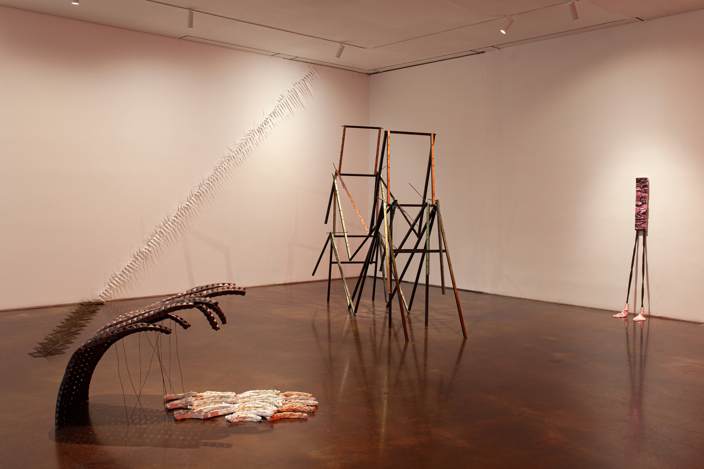
사진: 남서원. 제공: 아트선재센터. 2025
ⓒ Art Sonje Center
황아림: 저도요.
재훈: 그리고 제가 듣기로는 이 전시에 누가 참여하는지를 참여 작가도 전시 포스터가 완성되고 알았대요. 근데 우리가 앞서 줄창 말했듯이 홍지영도 문상훈도 서로의 이름이 포함된 작업을 출품했잖아요. 난 기획에 맞춰서 일부러 그렇게 낸 줄 알았어요. 근데 전후사정을 듣고 보니까 아니었더라고, 그래서 놀랐죠.
황아림: 그러니까요.
재훈: 네 맞아요. 재밌었어요.
황아림: 어떤 ‘사건적인’ 전시였다고 생각해요.
재훈: 제가 기대하던 사건은 아니었지만... 사건은 맞다고 생각해요.
이하령: 어떤 걸 기대하셨어요?
재훈: 그러니까 저는 <밤짐승 놀이패>나 《모텔전》, 《윤활유》나 《살도 뼈도 없는 나에게》처럼 이제 막 탄생하는 무언가를 목격하는 감각 같은 게 있을 줄 알았죠. 근데 그런 건 없더라고요.
황아림: 그러니까요. 다 같이 모여 있을 때도 그 탄생하는 느낌을 원했는데.
재훈: 근데 이번 전시의 타겟층은 참여 작가들을 팔로우해온 기존 관객들이라기 보단 프리즈 기간에 맞춰 새로 유입되는 관객이었던 것 같아요. 어쩔 수 없는 거죠, 뭐.
황아림: 재훈님이 기대하신 사건은 공동체 내부에 있는 사람들의 기획으로 완성될 수 있을 것 같네요.
재훈: 네. 사실 다른 사람들이랑 이 전시 이야기하면 절망적인 이야기밖에 안 하거든요. 근데 제가 생각하는 좋은 전시만 좋은 전시인 것도 아니고, 새로 유치되는 관객들한테 이 걸출한 작가들이 소개된다는 점에서는 우리가 평가하는 결과랑은 달리 성공적인 부분도 분명 있다고 생각해요. 구작 위주였지만 제가 보고 싶었던 작품들도 볼 수 있었고요. 그래서 저는 이 작가들한테 박수를 쳐주고 싶습니다.
황아림: ... 박수 쳐줄까요?
짝짝짝!
- 《모텔전: 눈뜨고 꾸는 꿈》(2023-10-27.- 10.28.), 곽예인 김보람 성재윤 야광 재훈 차연서 황선미 황아림 홍지영 황예지 참여, W/O F. 주최, 홍대 미성장 모텔
- <밤짐승 놀이패>, (2025-01-10.- 01.11.), 조현진, 하지민 주최/주관, 윈드밀
- 《살도 뼈도 없는 나에게》(2022-06-06.- 06.22.), 차연서 참여, SAPY 그레이룸
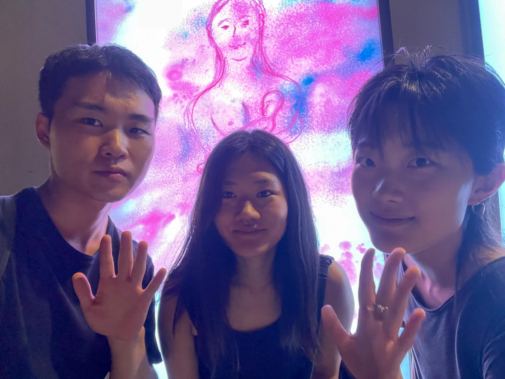